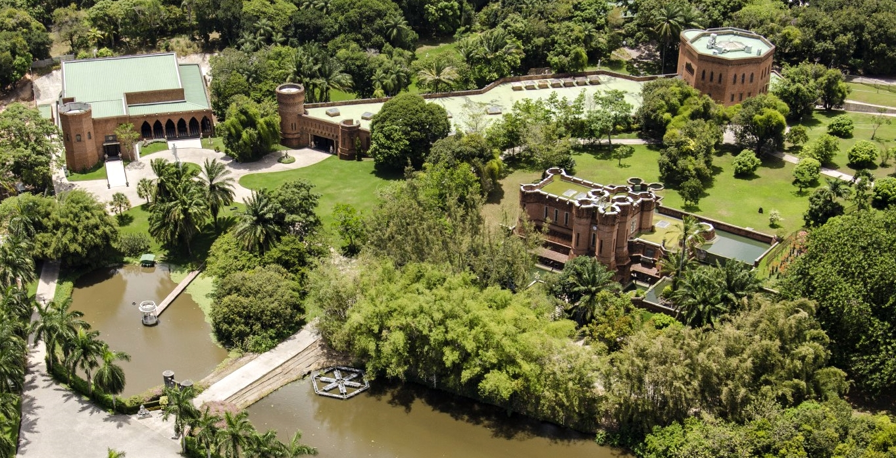

Instituto Ricardo Brennand
Francisco Brennand foi um renomado artista e empresário brasileiro, mais conhecido por ser o fundador do Instituto Ricardo Brennand (IRB), localizado em Recife, Pernambuco. O instituto leva o nome de seu filho, Ricardo Brennand, que faleceu em um acidente de avião em 1955, e foi criado como um tributo a ele. Francisco Brennand nasceu em 1927 e faleceu em 2019, deixando um legado significativo nas artes e na cultura de Pernambuco e do Brasil. O Instituto Ricardo Brennand é um complexo cultural e museu que abriga uma vasta coleção de obras de arte, incluindo esculturas, pinturas, armaduras, tapeçarias e outros objetos de arte de diferentes épocas e estilos. A coleção é distribuída em vários espaços, incluindo o famoso Castelo São João, uma construção imponente que serve como sede do instituto. O Castelo é notável pela sua arquitetura de estilo medieval, que cria um ambiente único para apreciar as obras de arte. Além de sua rica coleção permanente, o Instituto Ricardo Brennand também realiza exposições temporárias e eventos culturais que promovem a arte e a cultura, tanto regional quanto internacional. O instituto é um importante centro de pesquisa e educação, oferecendo programas e atividades educacionais para estudantes e o público em geral, com foco na promoção da cultura e da história de Pernambuco. Francisco Brennand foi um artista prolífico e sua obra abrange diversas mídias, incluindo cerâmica, pintura e escultura. Seu trabalho é caracterizado por temas surrealistas e místicos, frequentemente inspirados pela natureza, pela mitologia e pela cultura nordestina. Sua paixão pelas artes e pelo patrimônio cultural de Pernambuco desempenhou um papel fundamental na criação e desenvolvimento do Instituto Ricardo Brennand, que se tornou um importante marco cultural na região e no Brasil como um todo.
Uma das principais fotos do nosso ponto:
